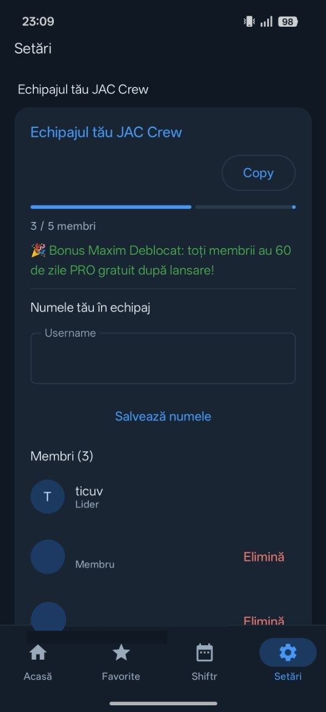

1.691 de articole
Consultă rapid articolele disponibile în baza locală a aplicației.
LEGISLAȚIE • ORGANIZARE • CONSULTARE OFFLINE
JAC reunește informații juridice pentru consultare rapidă și instrumente practice pentru organizarea activității. Consultă baza locală de legislație și gestionează-ți turele într-o singură aplicație.
Creată pentru acces rapid la informații și organizare practică.

Consultă rapid articolele disponibile în baza locală a aplicației.
Accesează conținutul juridic disponibil local, inclusiv fără conexiune la internet.
Organizează turele, urmărește orele lucrate și consultă sumarul programului.
ORGANIZAREA PROGRAMULUI
Planifică-ți programul de lucru, înregistrează turele și urmărește orele lucrate. Shiftr reunește calendarul și sumarul lunar într-o interfață ușor de consultat.
Programul de ture pe care îl introduci în Shiftr este stocat local, pe dispozitiv.
Vizualizează programul lunar și identifică rapid tipul fiecărei ture.
Consultă numărul de ture, orele lucrate, norma legală și diferența calculată de aplicație.
Organizează-ți programul folosind șabloanele disponibile în aplicație.
Descoperă funcțiile de export și celelalte instrumente disponibile în Shiftr.


Valorile din capturi sunt un exemplu de program introdus în aplicație și depind de regulile de calcul ale aplicației. Nu sunt un rezultat valabil pentru orice utilizator.
INFORMAȚII JURIDICE LA ÎNDEMÂNĂ
Caută în conținutul juridic disponibil în aplicație și navighează între categorii, articole și acte normative. Salvează rezultatele utile pentru a reveni rapid la ele.
Introdu un termen sau o expresie și consultă rezultatele relevante din baza disponibilă.
Navighează prin categoriile și modulele juridice disponibile în aplicație.
Păstrează la îndemână informațiile pe care vrei să le consulți din nou.
Consultă actele normative disponibile în format integral și verifică sursa oficială atunci când ai nevoie de textul de referință.

Introdu un termen sau o expresie și consultă rezultatele relevante din baza disponibilă.

Păstrează la îndemână informațiile pe care vrei să le consulți din nou.

Navighează prin categoriile și modulele juridice disponibile în aplicație.


COLABORARE
Funcțiile JAC Crew disponibile în aplicație îți permit să gestionezi echipa și să folosești instrumentele de colaborare oferite de modul.
Gestionarea echipajului ține de contul JAC și de funcțiile online ale aplicației. Este separată de consultarea offline a bazei locale.

TRANSPARENȚĂ
JAC facilitează consultarea conținutului disponibil în aplicație. Pentru aplicarea unei norme într-o situație concretă, verifică forma oficială și actualizată a actului normativ.
JAC este o aplicație independentă și nu reprezintă o instituție publică. Disponibilitatea locală a conținutului nu garantează că acesta reflectă automat toate modificările legislative ulterioare.

JAC • INFORMAȚII ȘI ORGANIZARE
Descoperă instrumentele JAC pentru consultarea informațiilor juridice și organizarea programului de lucru.